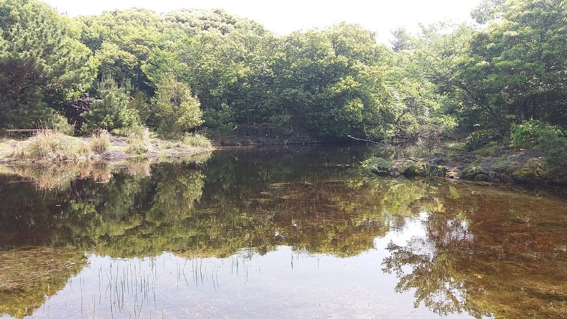

행사장 에코촌 유스호스텔 가까이에 있는 동백동산 습지. 사진: Aspere, CC0 — 위키미디어 공용 「Jeju Dongbaek Dongsan Wetland.jpg」. 행사 뒤 현장 사진으로 바꿉니다.
행사 개요
| 일시 | 2026년 12월 11일(금) 16:00 시작(등록 15:00~16:00), 이어서 만찬(17:30~19:00) |
|---|---|
| 장소 | 동백동산 에코촌 유스호스텔 |
| 대상 | 제주특별자치도·제주시·서귀포시, 생태관광지역(선흘리·평대리·하례리·저지리·호근동·수산2리), (사)제주생태관광협회, 생태관광 전문가, 생태관광주간 참여 단체, 생태관광에 관심 있는 분 — 약 50명 |
| 주최·주관 | 제주특별자치도 생태관광지원센터 |
| 후원 | (사)제주생태관광협회 |
| 상태 | 준비 중 — 행사 뒤 사진과 발표 자료를 이 페이지에 정리합니다. |
왜 하나요
2014년부터 제주의 생태관광 마을·사업자·전문가·행정이 해마다 모여 왔고, 2017년부터는 생태관광지원센터의 고정 사업으로 이어지고 있습니다. 지난 한 해의 사례를 나누고, 문제를 함께 이야기하며, 발전 방향을 찾는 자리입니다.
프로그램 (안)
| 15:00~16:00 | 등록 |
|---|---|
| 16:00~16:10 | 개회식 — 개회사, 격려사, 축사, 기념촬영 |
| 16:10~16:15 | 시상식 — 제주특별자치도지사 표창, (사)제주생태관광협회장 표창 |
| 16:15~16:25 | 경과 보고 — 2026 제주 생태관광주간과 행사(영상) |
| 16:25~16:30 | 2026 생태관광주간 프로그램 운영 단체 소개 — 센터 새 직원 소개, 참여 단체 소개 |
| 16:30~17:05 | 발표 — 신규 생태관광지 지정까지의 과정(수산2리) / 신규 개발 프로그램 소개(저지리·평대리·호근동·하례리·선흘1리) / 제주 다크투어 프로그램 소개 |
| 17:05~17:15 | 토론 — 센터 사업 운영 의견 나누기 |
| 17:15~17:25 | 생태관광 퀴즈(제주 생태관광 상품 증정)·경품 추첨 |
| 17:25~17:30 | 폐회 |
| 17:30~19:00 | 만찬 — 못다 한 이야기 |
프로그램은 준비하면서 바뀔 수 있습니다.
준비 현황
- 장소 확정 — 동백동산 에코촌 유스호스텔
- 마을별 프로그램 소개 요청 — 11월 20일 생태관광 자문단 회의
- 발표 순서·참석자 확정
- 경과 보고 영상
행사 뒤 올릴 것
현장 사진, 발표 자료, 시상 결과, 참가자 의견
출처
- 행사 내용: 생태관광 마을 및 사업자, 전문가 합동 워크숍 계획(안), 제주특별자치도 생태관광지원센터
- 사진: Aspere, CC0 — 위키미디어 공용